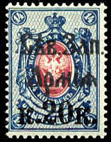
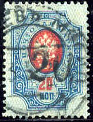
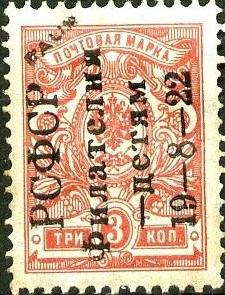
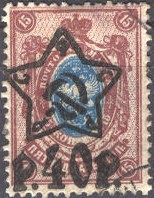

(Reduced sizes)
Return To Catalogue - Russia overview - Russia eagle overprints, part 1
Note: on my website many of the
pictures can not be seen! They are of course present in the
catalogue;
contact me if you want to purchase the catalogue.
Warning: the unoverprinted stamps of Russia were almost without any value and are still available in large amounts. Therefore many forgers have attempted to 'increase' their value by applying forged overprints and surcharges! I quote from 'The Forged Stamps of all Countries' by J.Dorn: "The issues from the beginning of the war are uncontrollable, and must be considered a specialized field, they are a gold-mine for the mass-production forgers."
Russia eagle overprints, part 1

(Reduced sizes)
The following stamps of Russia (arms issue) were overprinted for the North Western Army: 2 k green, 5 k lilac, 10 k blue (red overprint), 10 k on 5 k lilac, 15 k lilac and green, 20 k blue and red, 20 k on 14 k blue and red, 25 k green and violet, 50 k lilac and green, 1 R brown and orange, 10 R red, yellow and grey, all perforated. The values 1 k orange, 2 k green, 3 k red, 5 k lilac, 15 k lilac and blue, 70 k brown and orange, 1 R brown and orange, 3 R 50 k brown and green, 5 R blue and green and 10 R green and red were issued imperforate. These overprints are relatively rare, be careful, forged overprints exist!


'-25' on 1 k yellow (perforated or imperforated) '-50' on 2 k green (perforated or imperforated) '-70 k' on 5 k lilac (perforated or imperforated) '1 p.' on 3 k red (perforated or imperforated) '-1 p.' on 3 k red (perforated or imperforated) '3 pybnR' on 4 k red '10 pybnen' on 4 k red
(Another Kuban overprint)
For more stamps issued in South Russia click here.


'35' on 2 k green (imperforated or perforated) '50' on 3 k red (imperforated or perforated) '70' on 1 k yellow (imperforated or perforated) '1 py6pb' on 4 k red (imperforated or perforated) '3 py6pb' on 7 k blue (perforated) '5 py6pb' on 14 k blue and red (perforated)
The above stamps were issued by Admiral Koltchak.
Value of the stamps |
|||
vc = very common c = common * = not so common ** = uncommon |
*** = very uncommon R = rare RR = very rare RRR = extremely rare |
||
| Value | Unused | Used | Remarks |
| 35 on 2 k | * | * | |
| 50 on 3 k | * | * | |
| 70 on 1 k | * | * | |
| 1 R on 4 k | * | * | |
| 3 R on 7 k | * | * | |
| 5 R on 14 k | ** | ** | |
(another overprint for Siberia: 'P1-')

(Overprinted 'DBP' in fancy letters, prepared but not used)
(Further surcharges also exist, reduced sizes)
For more stamps of this region, click here.

(Overprinted in russian in a rectangle, non issued, 1922)
More stamps with this overprint can be found in the Priamur region.


(Genuinly used, image obtained from Bill Wagner)
25 on 1 k yellow (perforated or imperforated) 25 on 2 k green (perforated or imperforated) 25 on 3 k red (perforated or imperforated) 25 on 4 k red 50 on 7 k blue
For more stamps issued in South Russia and information on forgeries and postmarks of this issue click here.

(Image obtained from Bill Wagner)
'35 KOP' on 1 k yellow
There is a nice website on this issue on: http://www.firstissues.org/ficc/details/south_russia_sulkevich_1.shtml (made by Bill Wagner). For more information and stamps issued in South Russia click here.

(Genuinly used stamps, images obtained from Bill Wagner)
5 R on 5 k lilac (perforated or imperforated) 5 R on 20 k blue and red
A similar overprint was made on the Denikin (South Russia) issue (35 k blue).
(Reduced size)
100 R on 1 k yellow (perforated or imperforated)
The 100 R stamp was prepared, but never issued. The following
information was obtained from Bill Wagner (USA):
The Crimean 100 roubles surcharges were prepared for use, but
never issued. "Used" copies of them were
subsequently manufactured in Paris by a former postal official,
using cancellors which he carried away with him in the
evacuation. His downfall, however, was that these are
postmarked with dates previous to the supposed "issue
date." If you want an illustration of these, you can
find a multiple of them at
http://hometown.aol.com/byckoff1/SRUSSIA.html Note
that there are different settings ! The "1" of
"100" can be above the "B" or the
"L" of "Rublei" below it. This is
because the typographic plate was originally set up to print
double-figure surcharges, being modified at the last minute to
print three-figure surcharges.
For more stamps issued in South Russia click here.
(1920: '2 PYb' on 2 k green; issue for Yakutsk and '1 PYb' on 1 k
orange for Olekminsk)
(1920: 'PYB' and 'P' overprint of Kustanay)


These overprints are extremely rare (no doubt many forged overprints will exist). For more of these stamps, click here.


'20 Pfg' on 10 k blue '40 Pfg' on 20 k blue and red
1 k orange 1 k orange (imperforated) 2 k green 3 k red 5 k lilac 10 k blue
These stamps were overprinted with 'RSFSR Philately day 19 - 8 -1922', they were sold at 5000 times their initial value. Forged overprints exist where the letter 'delta' (first letter of the third(?) line) does not have a lower horizontal line and looks like a 'pi' (source: http://www.rossica.org/Samovar/viewthread.php?tid=1048).

Two forgeries with 'FAUX' overprint



5 R on 20 k blue and red 20 R on 15 k lilac and blue 20 R on 70 k brown and orange 30 R on 50 k brown and green 40 R on 15 k lilac and blue 100 R on 15 k lilac and blue 200 R on 15 k lilac and blue
Value of the stamps |
|||
vc = very common c = common * = not so common ** = uncommon |
*** = very uncommon R = rare RR = very rare RRR = extremely rare |
||
| Value | Unused | Used | Remarks |
| 5 R on 20 k | ** | ** | Imperforate: R |
| 20 R on 15 k | ** | ** | Imperforate: RRR |
| 20 R on 70 k | c | c | Imperforate: ** |
| 30 R on 50 k | c | c | Imperforate: ** |
| 40 R on 15 k | c | c | |
| 100 R on 15 k | * | c | |
| 200 R on 15 k | * | c | Imperforate: * |
Forged 20 R overprint, the '2' is different. This forged
overprint also exists inverted. Image obtained from
http://rossica.org/Samovar/viewthread.php?tid=379.
{kind=link}